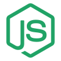

Software engineering / backend / automation
I turn complex workflows into dependable software.
Software engineer with experience delivering backend integrations, data processing, web interfaces, and intelligent automation for healthcare, energy, and enterprise operations.
Play console
A live corner of the portfolio.
Listening activity, build status, and controls for shaping how the portfolio feels while you explore it.
Click to interact.
Checking WakaTime...
See what I am working on
Live development activity will appear here.
Checking Spotify...
Connecting to Spotify
Music from my listening history will appear here.
touchecodes F1 Intelligence
Tap to explore
Hover to explore
Stack / Working tools
Tools I build with.
Drag to explore the stack
Backend & APIs
Python, C#, VB.NET, Node.js, FastAPI, Flask, Express.js, ASP.NET, Entity Framework, REST/HTTP APIs, JSON, SQL, SQLite, and MongoDB.
Web & Interfaces
JavaScript, HTML5, CSS3, Next.js, responsive layouts, Figma-to-code, reusable components, DOM interactions, and accessible controls.
Automation & Data
UiPath, Orchestrator, REFramework, Blue Prism, Power Automate, Selenium, Power BI, SPSS, data processing, and reporting.
Cloud & Systems
AWS, Azure, Git, GitHub, SharePoint, Jira, C++, Unreal Engine 5, microcontrollers, and hardware/software integration.
About / Engineering philosophy
Software that holds up beyond the demo.
OPERATOR Adewale AdeogunROLE Software EngineerBASE Lagos, NigeriaSTATUS Open to opportunities
Engineering useful systems for the work that happens after launch.
Backend APIsAutomationWebData
➜ whoami
I am a software engineer working across backend APIs, data processing, web interfaces, and automation. My work in healthcare and energy starts with the real workflow, then builds toward software people can trust in production.
➜ cat approach.md
Understand the workflow. Build for real users. Plan for failure. Measure what improves.
Understand the workflow
Map the data, dependencies, people, and exceptions before choosing the implementation.
Build useful interfaces
Connect APIs, data stores, and responsive UI around the work users actually need to do.
Plan for failure
Use validation, exception handling, tests, and clear runbooks to support live operations.
Measure the result
Track time saved, accuracy improved, and the cost of maintaining the system.
Experience / Production practice
Production work, measured in outcomes.
01



Senior RPA Developer
Promoted in 2025; now lead two developers while designing and supporting production automations and backend services. Build with UiPath, VB.NET, Python, JavaScript, HTML, CSS, CMD, and REST APIs, alongside Express.js, Node.js, MongoDB, SQL, Flask, FastAPI, Azure, and AWS.
60%faster payroll processing
UiPathVB.NETNode.jsExpress.jsMongoDBAzure / AWS
02
RPA Developer
Built and maintained unattended healthcare workflows for visit confirmation, invoice adjustments, and rejected claims, integrating UiPath, Python, VB.NET, JavaScript, REST APIs, SQL, and production operations.
~50hweekly visit-confirmation effort removed~40hweekly invoice-adjustment effort saved~10hweekly rejected-claims effort saved
UiPathPythonHealthcare automation
03
Software Engineer
Built automation and data-processing tools for subsea operations, bringing sensor inspections, maintenance logs, and third-party reports into tested workflows for engineers and analysts.
65%less manual data entry80%higher data accuracy30%development efficiency gain through reuse
Data processingReusable librariesTechnical documentation
04
Software Engineering Intern
Supported subsea engineering work by organising inspection and maintenance data, preparing small Python data-processing tools, and documenting findings for engineers. That hands-on work led into the Software Engineer role.
Engineering dataPythonDocumentation
Selected work / Case-file index
Selected software and automation work.
Explore prototypes, production workflows, data tools, and hardware systems from my engineering practice.
01 / PLATFORM
Educational Coding Platform
Prototyped a gamified learning platform with responsive UI, FastAPI routes, SQLite3 schema planning, code-feedback workflows, and student progress tracking.
FastAPISQLite3UI Architecture
02 / PRODUCTION
Healthcare Workflow Automation
Delivered unattended visit-confirmation, invoice-adjustment, and rejected-claims workflows, cutting recurring manual work by roughly 100 hours per week across those processes.
UiPathPythonREST APIs
03 / DATA
Large-Scale Web Extraction & Code Parsing
Built a Python and JavaScript workflow to ingest and restructure a 25-page web platform, remove layout-heavy markup, and generate clean standalone files.
PythonParsingJavaScript
04 / HARDWARE
Automated Electric Groundnut Roaster
Developed C++ and microcontroller control logic for a roasting system integrating electrical heating, sensor inputs, thermal behaviour, and hardware operation.
C++MicrocontrollersThermal control
05 / INTERFACE
UI Replication & Front-End Systems
Built responsive Figma-to-code interfaces and stateful interactions including navigation, search, modals, mobile menus, and translation controls.
HTMLCSSJavaScript
Contact
Let’s build something reliable.
I’m interested in backend services, API integrations, production automation, data tools, and web products that need thoughtful engineering.
{
"name": "Adewale Adeogun",
"focus": "Software engineering",
"email": "adewaleeadeogun@gmail.com",
"github": "@a-adewale"
}